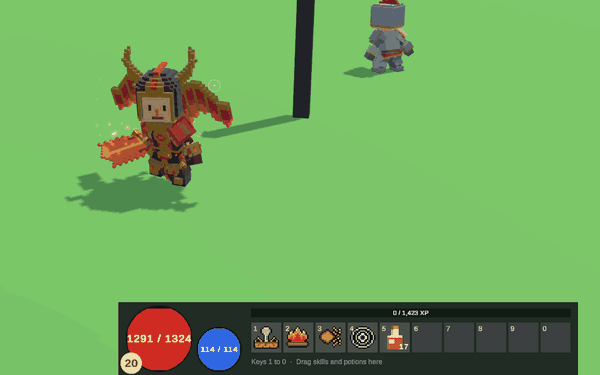
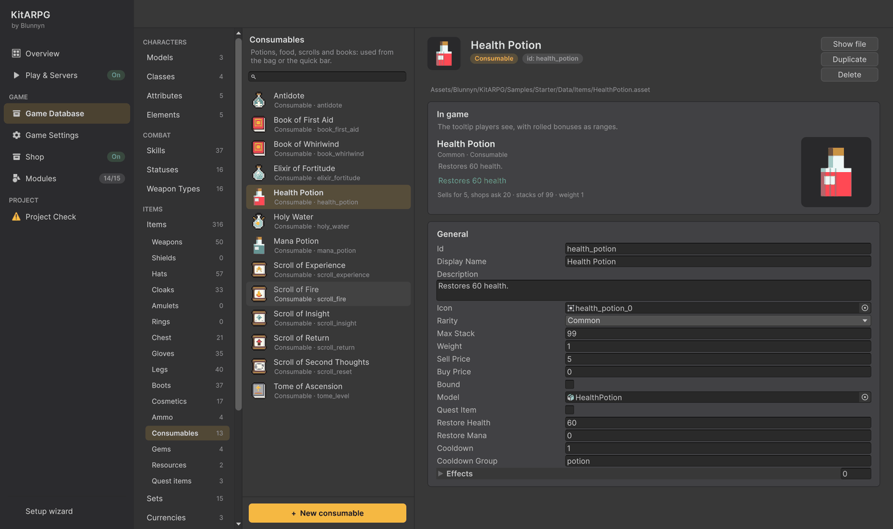
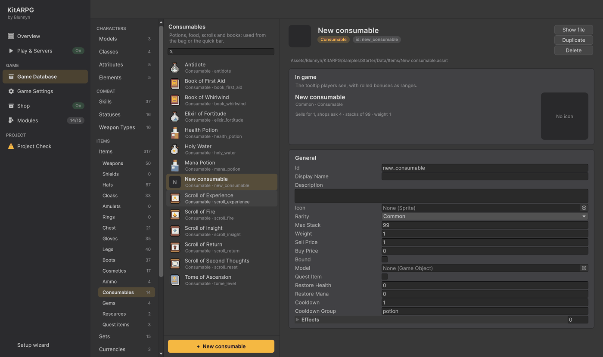
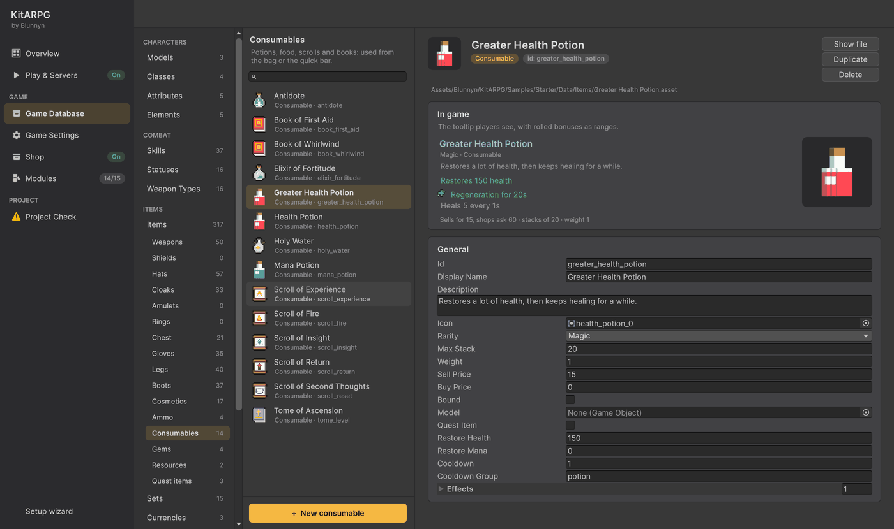
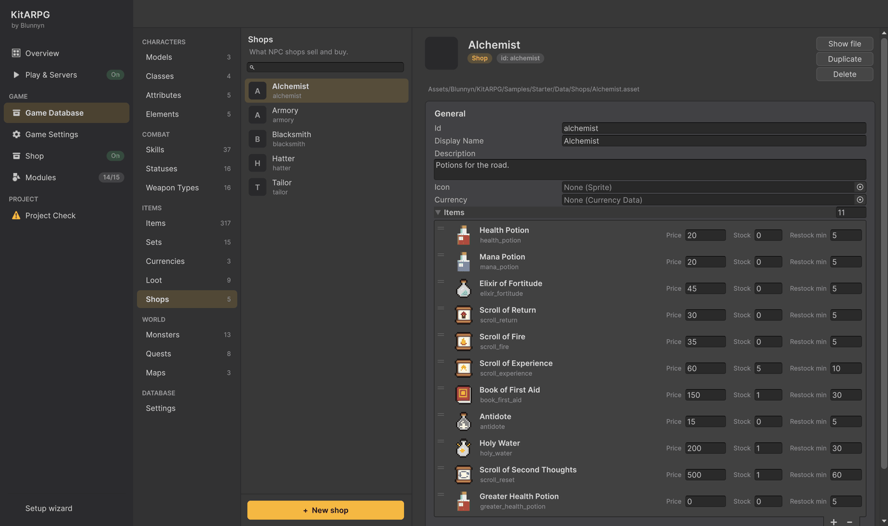
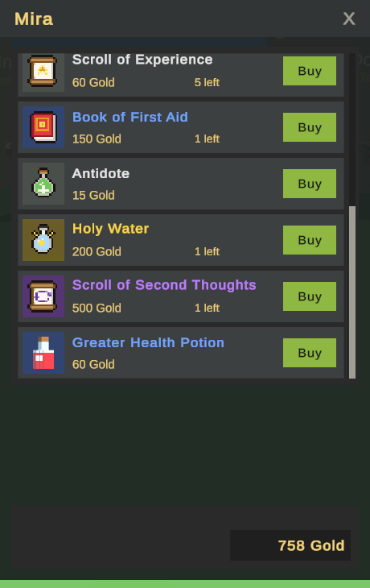

Hacer una poción
Esta guía hace una Greater Health Potion: cura 150 de golpe, luego sigue curando durante 20 segundos, y Mira, la alquimista, la vende en el pueblo.

1. Abre los consumibles
- Abre la ventana KitARPG con KitARPG > Open KitARPG (
Ctrl/Cmd+Shift+K) y ve a Game Database. - En Items, haz clic en Items y luego en Consumables. La lista muestra cada poción, pergamino y libro del juego.

2. Haz el ítem
Pulsa + New consumable abajo de la lista. El kit crea el asset junto a los demás, lo agrega a la base de datos y lo abre.

La página empieza con In game: el tooltip tal como lo verán los jugadores. Se actualiza mientras escribes.
3. Llénalo
En General:
| Campo | Valor | Por qué |
|---|---|---|
| Id | greater_health_potion |
Se guarda con cada copia que tienen los jugadores. Ponlo ahora y no lo cambies después. |
| Display Name | Greater Health Potion |
|
| Description | Restores a lot of health, then keeps healing for a while. |
Última línea del tooltip. |
| Icon | Cualquier sprite | Los íconos de pociones de la muestra están en Art/Sprites/Icons. |
| Rarity | Magic | Pinta el nombre de azul. |
| Max Stack | 20 | Caben 20 en una casilla de la bolsa. |
| Sell Price | 15 | Las tiendas piden cuatro veces esto salvo que pongas Buy Price. |
| Restore Health | 150 | Se cura de golpe. |
Para cambiar también el nombre del archivo, usa Show file y renómbralo en la ventana Project. El id no cambia.

4. Agrega un efecto
Effects agrega cualquier cosa más allá de curar: experiencia, niveles, un skill, un estado, un viaje a casa.
- Abre Effects y pulsa +.
- Pulsa Pick a type en la línea nueva y elige Status.
- Pon Status en Regeneration, Duration en 20 y Level en 1.
El tooltip ahora agrega "Regeneration for 20s" y lo que hace. Cada tipo de efecto está en Ítems.
5. Véndela en una tienda
- En la Game Database, abre Items > Shops y elige Alchemist.
- Abre Items, pulsa + abajo y elige la Greater Health Potion.
- Pon Price en 60. Deja Stock en 0 para que no se acabe nunca.

Mira usa esta tienda, así que no hace falta nada más. Para vender desde un NPC nuevo, consulta Tiendas de NPC.
6. Pruébala
- Abre la escena
Titley pulsa Play. Entra al juego en un jugador. - Camina hasta Mira, la alquimista del centro del pueblo, y haz clic en ella. La poción es la última de su lista.

- Compra una, o escribe
/item greater_health_potion 5en el chat. - Úsala desde la bolsa (doble clic) o arrástrala a la barra rápida y pulsa su tecla.
Una poción que solo cura no se puede usar con la vida llena. Esta tiene también Regeneration, así que sí se puede.
Próximos pasos
- Haz que una misión la dé como recompensa: Hacer una misión.
- Cada campo de los ítems: Ítems.